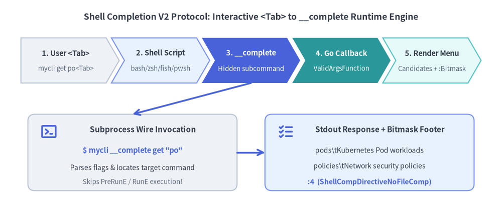
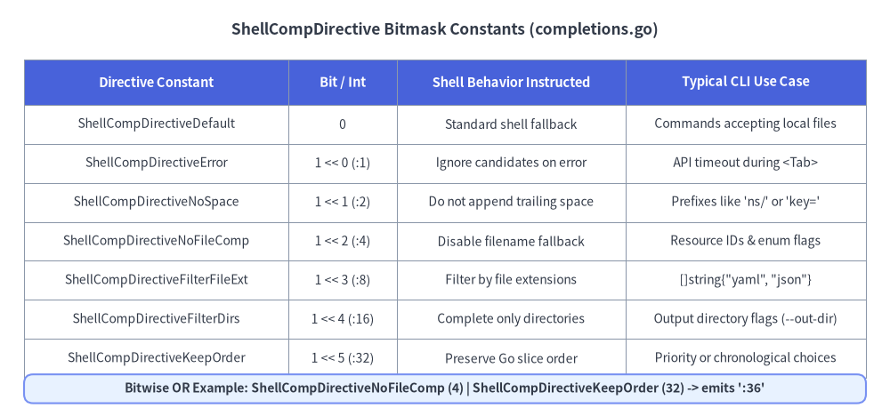

Shell Completion V2 & Directives
Cobra's Shell Completion V2 engine (completions.go) transforms how Go CLIs implement <Tab> auto-completion. Instead of forcing developers to write custom Bash or Zsh shell scripts, Cobra compiles your completion logic directly into your Go binary and exposes it via a hidden runtime protocol (__complete and __completeNoDesc) across Bash, Zsh, Fish, and PowerShell.

Source Code
from drawlib.canvas import save, setup
from drawlib.icons import phosphor
from drawlib.lines import line
from drawlib.shapes import rectangle
from drawlib.smartarts import ChevronProcess
from drawlib.styles import Styles
from drawlib.text import text
setup(width=144, height=60)
text(
(72, 55),
"Shell Completion V2 Protocol: Interactive <Tab> to __complete Runtime Engine",
style=Styles.DarkBold.patch(text_size=12.5),
)
flow = ChevronProcess(
style=Styles.Neutral,
text_style=Styles.DarkBold.patch(text_size=10.5),
description_style=Styles.Muted.patch(text_size=9.5),
corner_angle=60.0,
spacing=1.5,
flat_left_end=True,
)
flow.add("1. User <Tab>", description="mycli get po<Tab>")
flow.add("2. Shell Script", description="bash/zsh/fish/pwsh", style=Styles.PrimaryNeutral)
flow.add(
"3. __complete",
description="Hidden subcommand",
style=Styles.PrimaryFlat,
text_style=Styles.WhiteBold.patch(text_size=10.5),
description_style=Styles.White.patch(text_size=9.5),
)
flow.add(
"4. Go Callback",
description="ValidArgsFunction",
style=Styles.SecondaryFlat,
text_style=Styles.WhiteBold.patch(text_size=10.5),
description_style=Styles.White.patch(text_size=9.5),
)
flow.add("5. Render Menu", description="Candidates + :Bitmask", style=Styles.SecondaryNeutral)
flow.draw(xy=(6, 36), width=132, height=13)
# Bottom Left: Wire Request
rectangle((38, 16), width=60, height=22, style=Styles.Neutral.patch(shape_r=2.0))
phosphor.terminal_window((14, 22), width=5.0, style=Styles.PrimaryBold)
text((41, 22.5), "Subprocess Wire Invocation", style=Styles.DarkBold.patch(text_size=11.0))
text((38, 16.5), "$ mycli __complete get \"po\"", style=Styles.PrimaryBold.patch(text_size=10.5))
text((38, 11.5), "Parses flags & locates target command", style=Styles.Dark.patch(text_size=10.0))
text((38, 7.5), "Skips PreRunE / RunE execution!", style=Styles.Muted.patch(text_size=9.5))
# Bottom Right: Wire Response
rectangle((106, 16), width=60, height=22, style=Styles.PrimaryNeutral.patch(shape_r=2.0))
phosphor.list_checks((82, 22), width=5.0, style=Styles.PrimaryBold)
text((109, 22.5), "Stdout Response + Bitmask Footer", style=Styles.DarkBold.patch(text_size=11.0))
text((106, 16.5), "pods\\tKubernetes Pod workloads", style=Styles.Dark.patch(text_size=10.0))
text((106, 12.0), "policies\\tNetwork security policies", style=Styles.Dark.patch(text_size=10.0))
text((106, 7.5), ":4 (ShellCompDirectiveNoFileComp)", style=Styles.PrimaryBold.patch(text_size=10.0))
line((72, 36), (38, 27), arrow_head="->", style=Styles.PrimaryBold)
line((68, 16), (76, 16), arrow_head="->", style=Styles.PrimaryBold)
save()
1. Static vs. Dynamic Completions in Go
Cobra supports five graduated mechanisms for supplying completion candidates, ranging from zero-code static lists to context-aware API queries:
1. Static ValidArgs & ArgAliases
For commands with a fixed vocabulary of positional arguments, populate ValidArgs using cobra.CompletionWithDesc(choice, description) (or raw "choice\tdescription" strings):
cmd := &cobra.Command{
Use: "get <resource-type>",
Short: "Display one or many cluster resources",
ValidArgs: []cobra.Completion{
cobra.CompletionWithDesc("pods", "Pod workload instances"),
cobra.CompletionWithDesc("services", "ClusterIP and LoadBalancer services"),
cobra.CompletionWithDesc("deployments", "Declarative ReplicaSet controllers"),
},
// ArgAliases are suggested ONLY if 'toComplete' matches 0 entries in ValidArgs
ArgAliases: []string{"po", "svc", "deploy"},
Args: cobra.MatchAll(cobra.ExactArgs(1), cobra.OnlyValidArgs),
}
2. Helper Functions: FixedCompletions & NoFileCompletions
Cobra v1.10.2 provides two ready-made CompletionFunc constructors (completions.go:151-164):
cobra.NoFileCompletions: Suppresses the shell's default local file completion on commands or flags that do not take file paths (ValidArgsFunction: cobra.NoFileCompletions).cobra.FixedCompletions(choices, directive): Returns aCompletionFuncclosure for flags or positional arguments with static choices plus a customShellCompDirective.
3. Dynamic Positional Completions (ValidArgsFunction)
When positional candidates depend on live state (such as active Kubernetes pods, Git branches, or previous positional arguments in args), assign ValidArgsFunction:
cmd.ValidArgsFunction = func(
cmd *cobra.Command,
args []string,
toComplete string,
) ([]cobra.Completion, cobra.ShellCompDirective) {
// args[0] is already typed; stop suggesting positional args after 1 argument
if len(args) >= 1 {
return nil, cobra.ShellCompDirectiveNoFileComp
}
// Read already-parsed flags (e.g., --namespace) during <Tab> completion!
ns, _ := cmd.Flags().GetString("namespace")
pods, err := fetchLivePodNames(cmd.Context(), ns, toComplete)
if err != nil {
cobra.CompErrorln(err.Error())
return nil, cobra.ShellCompDirectiveError
}
return pods, cobra.ShellCompDirectiveNoFileComp
}
4. Dynamic Flag Completions (RegisterFlagCompletionFunc)
Attach dynamic or static completion logic to any local or persistent flag via cmd.RegisterFlagCompletionFunc(flagName, fn) (thread-safely stored in flagCompletionFunctions via flagCompletionMutex):
cmd.Flags().StringP("output", "o", "table", "Output format")
_ = cmd.RegisterFlagCompletionFunc(
"output",
cobra.FixedCompletions(
[]cobra.Completion{
cobra.CompletionWithDesc("json", "Machine-readable JSON"),
cobra.CompletionWithDesc("yaml", "Declarative YAML manifest"),
cobra.CompletionWithDesc("table", "Human-friendly ASCII table"),
},
cobra.ShellCompDirectiveNoFileComp|cobra.ShellCompDirectiveKeepOrder,
),
)
2. ShellCompDirective Bitmask Reference
Every completion callback returns a cobra.ShellCompDirective bitmask (completions.go:56-96). Multiple directives can be combined using bitwise OR (|).

Source Code
from drawlib.canvas import save, setup
from drawlib.shapes import rectangle
from drawlib.smartarts import Table
from drawlib.styles import Styles
from drawlib.text import text
setup(width=148, height=68)
text(
(74, 63),
"ShellCompDirective Bitmask Constants (completions.go)",
style=Styles.DarkBold.patch(text_size=12.5),
)
tbl = Table(
cell_style=Styles.White,
text_style=Styles.Dark.patch(text_size=10.0),
header_cell_style=Styles.PrimaryFlat,
header_text_style=Styles.WhiteBold.patch(text_size=10.5),
border_style=Styles.MutedThin,
)
rows = [
["Directive Constant", "Bit / Int", "Shell Behavior Instructed", "Typical CLI Use Case"],
[
"ShellCompDirectiveDefault",
"0",
"Standard shell fallback",
"Commands accepting local files",
],
[
"ShellCompDirectiveError",
"1 << 0 (:1)",
"Ignore candidates on error",
"API timeout during <Tab>",
],
[
"ShellCompDirectiveNoSpace",
"1 << 1 (:2)",
"Do not append trailing space",
"Prefixes like 'ns/' or 'key='",
],
[
"ShellCompDirectiveNoFileComp",
"1 << 2 (:4)",
"Disable filename fallback",
"Resource IDs & enum flags",
],
[
"ShellCompDirectiveFilterFileExt",
"1 << 3 (:8)",
"Filter by file extensions",
"[]string{\"yaml\", \"json\"}",
],
[
"ShellCompDirectiveFilterDirs",
"1 << 4 (:16)",
"Complete only directories",
"Output directory flags (--out-dir)",
],
[
"ShellCompDirectiveKeepOrder",
"1 << 5 (:32)",
"Preserve Go slice order",
"Priority or chronological choices",
],
]
tbl.draw_flexible(
xy=(4, 58),
column_widths=[44, 18, 38, 40],
row_heights=[7.5, 6.5, 6.5, 6.5, 6.5, 6.5, 6.5, 6.5],
data=rows,
align="top_left",
)
rectangle((74, 3.2), width=140, height=4.8, style=Styles.PrimaryNeutral.patch(shape_r=1.5))
text(
(74, 3.2),
"Bitwise OR Example: ShellCompDirectiveNoFileComp (4) | ShellCompDirectiveKeepOrder (32) -> emits ':36'",
style=Styles.DarkBold.patch(text_size=10.0),
)
save()
3. Built-in completion Subcommand & __complete Protocol
Unless disabled via rootCmd.CompletionOptions.DisableDefaultCmd = true, Cobra automatically injects a top-level completion command with four subcommands (bash, zsh, fish, powershell) when your command tree has subcommands or completion functions.
Customizing rootCmd.CompletionOptions
rootCmd.CompletionOptions = cobra.CompletionOptions{
DisableDefaultCmd: false, // Keep built-in 'mycli completion <shell>'
DisableNoDescFlag: true, // Hide '--no-descriptions' flag on completion subcommands
DisableDescriptions: false, // Keep rich descriptions in zsh/fish/powershell/bash>=4
HiddenDefaultCmd: false, // Set true to hide 'completion' from --help output
}
How the Hidden __complete Wire Protocol Works
When a user presses <Tab>, the generated shell script executes your binary out-of-process using the hidden __complete command (ShellCompRequestCmd):
# Test your completion logic directly in your terminal without sourcing shell scripts!
$ mycli __complete deploy --output ""
json Machine-readable JSON
yaml Declarative YAML manifest
table Human-friendly ASCII table
:36
Completion ended with directive: ShellCompDirectiveNoFileComp, ShellCompDirectiveKeepOrder
stdoutContract: The shell script reads every line before the final:36line as a candidate (value\tdescription), and parses the integer after:on the final line as theShellCompDirectivebitmask.stderrDiagnostics: The diagnostic summary line (Completion ended with directive: ...) is printed tostderrso a human runningmycli __completesees it in the terminal, while the shell completion script ignoresstderr(or redirects it to$BASH_COMP_DEBUG_FILEwhencobra.CompDebugln(...)is used).